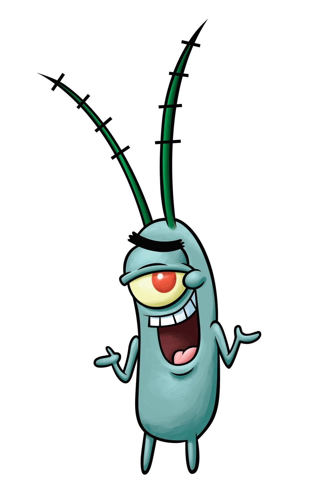

8)Шелдон Джей

Описание:
один из главных персонажей американского мультсериала «Губка Боб Квадратные Штаны». Планктон является интеллектуальным планктонным копеподом, владеющим непопулярным рестораном и мечтающий завладеть секретной формулой крабсбургера. Был придуман морским биологом и художником-мультипликатором Стивеном Хилленбергом, а озвучен Мистером Лоуренсом (в русском дубляже — Юрием Меншагиным и Андреем Бархударовым).
День Рождения:
Пол:Мужской
Рост:Неизвестен
Вес:Неизвестен
Интересные факты:
-Хотя Планктон отсутствует в финальной раскадровке, он появляется в удаленной сцене из "Ракета Сэнди", где он захвачен Губкой Бобом и Патриком, когда пытается проникнуть в Красти Краб.
-Во всех появлениях Планктона в 5 сезоне, кроме одного, он играет главную роль, за исключением "Стэнли С. Квадратные Штаны".
-Анализ того, что находится внутри Планктона, меняется. Экран Карен в серии "Планктон!" показывает, что он на 1% злой и на 99% горючий газ. В "Планктон под каблуком" он на 30% злой парень, на 20% злобный монстр и на 50% злой прикладник, всего на 100% большой рывок.
-Согласно эпизоду "Ананасовое вторжение", Планктон не любит вкус ананаса.
-В официальном справочнике телеканала Nickelodeon сказано, что дядюшка Планктона живёт в России.
-В мультсериале Планктон крадет то рецепт крабсбургера, то сам крабсбургер.
Назад